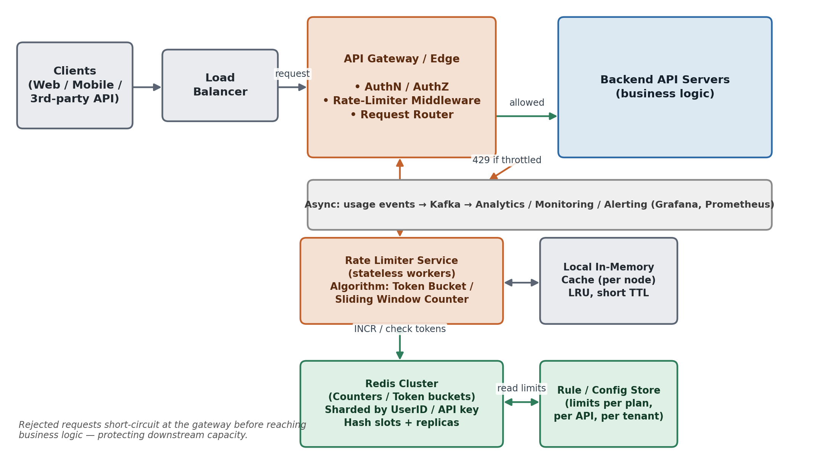
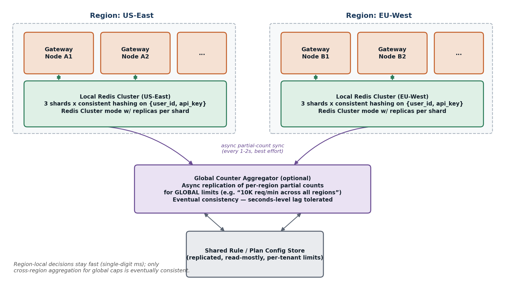

Designing an API Rate Limiter
A complete architecture, algorithms, and trade-off playbook: requirements, capacity estimation, where rate limiting should live, algorithms deep dive (fixed window, sliding window, token bucket, leaky bucket, GCRA), distributed & multi-region design, API contract, failure modes, and 26 follow-up interview questions.
Problem Statement & Motivation
A rate limiter caps how many requests a client — a user, device, IP address, or API key — may make to a service within a given time window, rejecting or delaying requests once that cap is reached. It sits on the critical path of every inbound request, so it has to make an allow/deny decision in microseconds without becoming a bottleneck itself.
Common Real-World Examples
- A messaging API allows 1 message per second per user.
- A payments API allows only 3 failed card-charge attempts per day per account.
- A public API allows 5,000 requests/hour per API key on the free tier, and 50,000/hour on the paid tier.
- A login endpoint allows 5 failed attempts per 15 minutes per account, to blunt credential-stuffing.
- A single IP can create at most 20 new accounts per day.
Why It Matters
- Availability & DoS protection: throttle abusive or bot traffic before it exhausts CPU, DB connections, or downstream quotas.
- Security: bound brute-force attempts against auth, OTP, and payment endpoints.
- Cost control: a single misbehaving client can otherwise generate unbounded compute and egress cost.
- Fair use: one tenant's traffic burst shouldn't degrade latency for everyone else sharing the service (the "noisy neighbor" problem).
- Monetization: different limits per pricing tier is a legitimate product lever — this is how Stripe, GitHub, and Twitter/X structure their public APIs.
- Traffic shaping: smooth spiky, bursty traffic into a steadier stream that downstream services can actually handle.
Requirements and Goals
Functional Requirements
- FR1 — Core throttling: given an identity (user ID, API key, IP, or a composite key) and a rule (N requests per T seconds), accept or reject each incoming request accordingly.
- FR2 — Configurable rules: support multiple, independently configurable limits — per user, per API endpoint, per tenant/plan tier — and combinations of them (e.g. a burst cap per minute AND a sustained cap per day).
- FR3 — Cluster-wide correctness: enforce the limit consistently across a horizontally scaled fleet of stateless servers, not per server instance.
- FR4 — Clear client signal: when throttled, return a clear, machine-readable signal (HTTP 429) telling the client how long to wait before retrying.
- FR5 — Dynamic configuration: allow limits and rules to be updated or deployed without restarting the service.
Non-Functional Requirements
- NFR1 — High availability: the limiter is in the request hot path; an outage in the limiter must not take down the whole API (see Failure Modes below).
- NFR2 — Low latency overhead: target well under 10 ms p99 added latency per request; ideally sub-millisecond once local caching is in place.
- NFR3 — Horizontal scalability: must handle the same order of magnitude of QPS as the API it protects — potentially millions of checks per second.
- NFR4 — Approximate accuracy is fine: reasonable accuracy, not perfect accuracy — being off by a small percentage under load is an acceptable trade for throughput and availability. Rate limiting is a protection mechanism, not a financial ledger.
- NFR5 — Small memory footprint: tens of millions of identities may be tracked concurrently, so per-identity state must be small and close to O(1).
Explicitly Out of Scope
Authentication/authorization itself, billing reconciliation, and network-layer (L3/L4) DDoS scrubbing — those are handled by separate systems (an identity provider, a billing pipeline, and a CDN/scrubbing layer respectively). Calling this out explicitly in an interview shows you understand where this component's boundary sits.
Capacity Estimation (Back-of-the-Envelope)
Assume a platform with 10 million registered users and roughly 500,000 requests per second at peak across all API servers. Every one of those requests needs a rate-limit check, so the limiter subsystem itself must sustain on the order of 500K decisions/sec. This single number drives most of the design choices below.
Memory Footprint by Algorithm
→ for 10M concurrently tracked identities ≈ 320 MB. Cheap, but doesn't fix the boundary-burst correctness problem (see Algorithms Deep Dive).
→ 10M identities ≈ 120 GB. This is why nobody runs sliding-window-log at real scale without a memory-saving variant.
→ 10M identities ≈ 440 MB. This is the practical sweet spot, and it's why almost every production rate limiter (Stripe, GitHub, Cloudflare) converges on constant-space, token-bucket-like state.
Redis Throughput
A single, well-provisioned Redis node comfortably serves 100K–200K simple ops/sec; a Lua-scripted check-and-decrement is a handful of internal ops, so one node can realistically serve on the order of 50K–100K rate-limit decisions/sec. To reach 500K decisions/sec we either shard across 6–10 Redis shards, or add a local-cache pre-filter layer that absorbs most traffic before it ever reaches Redis — in practice, production systems do both.
Where Should Rate Limiting Live?
Rate limiting can be enforced at several layers of the stack, and a strong answer names the trade-offs across all of them before committing to one.
| Layer | Description | Pros | Cons |
|---|---|---|---|
| Client-side (SDK) | Client tracks its own usage and self-throttles before sending. | Cheapest option; saves a network round trip for requests that would be rejected anyway. | Not trustworthy alone — a malicious or buggy client can simply ignore it. Advisory only; must be paired with server-side enforcement. |
| API Gateway / Edge (Kong, Envoy, NGINX, AWS API Gateway, Cloudflare) | Centralized middleware sitting in front of all backend services. | One place to configure and observe all limits; protects every backend uniformly; rejects before any application compute is spent. | Becomes a shared dependency for the whole platform; needs its own high-availability story. |
| Dedicated rate-limiter service / sidecar (e.g. Envoy ext_authz, Istio) | A separate deployable service the gateway or mesh calls out to. | Reusable across many services and languages; independently scalable; clean separation of concerns. | Adds an extra network hop → extra latency; one more moving part to operate. |
| Embedded in each service | A library linked directly inside each service's process. | No extra network hop; language-native. | Limits fragment per service instance unless backed by shared storage anyway; logic gets duplicated across services. |
High-Level Architecture

Walk-Through
- A client sends a request; it hits a Load Balancer, then the API Gateway / Edge layer.
- The Gateway's rate-limiter middleware extracts the identity (user ID / API key / IP) and the applicable rule (which API, which plan) and asks the Rate Limiter Service — or decides inline — "is this allowed?"
- The Rate Limiter Service consults the Redis cluster holding counters/token buckets, atomically checks-and-updates the state, and returns an allow/deny decision.
- Allowed requests are forwarded to the backend API servers; denied requests short-circuit at the edge with HTTP 429. This matters: rejected traffic never touches business logic, which is exactly what protects downstream capacity.
- A rule/config store (can be Redis itself, or a small config service backed by Postgres/etcd and cached locally) holds the actual limits per plan/tenant/API, so limits can change without a code deploy.
- Usage events stream asynchronously (e.g. via Kafka) to analytics and monitoring — this path is off the request's critical path, so it never adds latency to the allow/deny decision itself.
Rate-Limiting Algorithms — Deep Dive
Fixed Window Counter
Bucket time into fixed-size windows (e.g. 00:00–00:59); keep a single counter per identity per window; increment on each request; reject once the counter exceeds the limit; reset the counter when the window rolls over.
- Pros: trivial to implement; O(1) memory; easy to reason about.
- Cons: the boundary-burst problem — a client can send N requests at the very end of one window and N more immediately at the start of the next, achieving 2N requests in a short span, double the intended rate.
Sliding Window Log
Store the exact timestamp of every accepted request (e.g. in a Redis Sorted Set keyed by identity). On each new request: evict entries older than (now − window), count what's left, allow if under the limit, then insert the new timestamp.
- Pros: perfectly accurate — no boundary problem at all.
- Cons: memory scales linearly with the limit itself, since every timestamp in the window must be remembered — expensive at scale (12 KB/identity vs. 44B/identity for the counter variants).
Sliding Window Counter
Keep small fixed-window counters at a finer granularity than the overall limit (e.g. per-minute counters for an hourly limit). On each check, take a weighted sum of the current partial window and the previous window based on how far into the current window we are:
allowed_count ≈ previous_window_count × (1 - elapsed_fraction_of_current_window)
+ current_window_count- Pros: approximates sliding-window accuracy with a small, constant number of counters (60 for per-minute granularity on an hourly limit) — roughly an 86% memory reduction versus the log approach.
- Cons: still an approximation (small error possible near window edges); a bit more logic than a single counter.
Token Bucket
Each identity has a bucket with capacity C. Tokens refill continuously at rate R tokens/sec, up to the cap. A request is allowed only if at least 1 token is available, which is then deducted; an empty bucket means reject (or, in a queueing variant, wait).
- Pros: naturally allows short bursts up to the bucket size while still enforcing a strict long-run average rate — this matches real client behavior (bursty, not perfectly uniform). State is O(1): just the current token count and the last-refill timestamp; refill is computed lazily from elapsed time on read, no background job needed. This is the industry-default algorithm for public APIs — Stripe, AWS, and Google Cloud all expose token-bucket-flavored limits.
- Cons: burst capacity is a second tunable parameter (in addition to rate) — slightly more API surface to explain to consumers.
Leaky Bucket (as a Queue)
Incoming requests are enqueued into a fixed-size FIFO queue. A worker drains (processes) the queue at a constant, fixed rate. If the queue is full, new requests are dropped.
- Pros: perfectly smooths traffic into a constant output rate — ideal when the real concern is protecting a downstream system that cannot tolerate any burst at all (a legacy database, a hardware interface, general network traffic shaping).
- Cons: no burst tolerance whatsoever (unlike token bucket) — a perfectly legitimate short burst gets queued and delayed rather than served promptly; introduces queuing latency; a less natural fit for an immediate HTTP allow/deny decision, more natural for traffic-shaping or job-processing pipelines.
GCRA — Generic Cell Rate Algorithm (Production-Grade Token Bucket)
Instead of storing a token count that must be incremented, decremented, and refilled, GCRA stores a single value: the theoretical arrival time (TAT) of the next allowed request. On each request, compare now vs. TAT; if now is late enough (accounting for the burst allowance), allow the request and advance TAT by the emission interval; otherwise reject. It is mathematically equivalent to token bucket, but the state is a single timestamp, which is trivial to update atomically — a SET, not an increment-with-clamping.
- Pros: same burst-plus-average-rate guarantees as token bucket, but the simplest possible shape for a distributed store: one Redis key, one atomic write, easy TTL-based cleanup, no periodic refill job. This is what Cloudflare's edge limiter and Stripe's open-source "throttled" library use in production behind Redis Lua scripts.
- Cons: less intuitive to derive on a whiteboard than "tokens in a bucket" — worth naming to show depth, but token bucket is the safer primary answer to lead with in an interview.
Comparison at a Glance
| Algorithm | Handles bursts? | Memory / identity | Accuracy | Distributed fit | Typical use |
|---|---|---|---|---|---|
| Fixed Window | No (boundary spike) | O(1) — smallest | Low | Trivial | Simple internal quotas, non-critical paths |
| Sliding Window Log | Yes | O(limit) — largest | Exact | Costly at scale | Low-QPS, high-precision needs |
| Sliding Window Counter | Mostly | O(buckets), small | Approximate, good | Good | General-purpose default |
| Token Bucket | Yes, by design | O(1) | Good, intentional bursts | Good | Public APIs, per-user / per-key limits |
| Leaky Bucket (queue) | No — smooths only | O(queue size) | Exact output rate | Needs a queue | Traffic shaping, fragile downstreams |
| GCRA | Yes | O(1), one timestamp | Good | Best — single atomic write | High-scale production (Cloudflare, Stripe) |
Detailed Component Design
Data Model / Key Schema (Redis)
Key naming convention:
rl:{tenant}:{api_route}:{identifier}
e.g. rl:acme-corp:/v1/charges:user_98213- Token bucket representation: a Redis Hash per key:
{ tokens: <float>, last_refill_ts: <epoch_ms> }, with a TTL of roughly 2× the bucket's full-refill time so idle identities naturally expire and don't leak memory forever. - Sliding window counter representation: a Redis Hash of
{ minute_bucket_epoch: count }, TTL = window length — e.g. 60–70 minute-keys for an hourly limit, matching the memory derivation above.
Atomicity via Server-Side Scripting
The classic bug this design must avoid is the read-then-write race: two concurrent requests both read count = 2 (under a limit of 3), both decide "allow," and both write count = 3 — net effect, two requests admitted when only one slot was actually left.
The fix is to make "read, decide, update" a single atomic operation on the data store, not three separate round trips:
- Redis Lua scripting (EVAL): runs the whole check-and-update as one atomic unit on the Redis server, so no other client can interleave. This is the standard approach — used by GitHub's rate limiter, redis-gcra, and most production systems.
- Alternatives: Redis's native atomic primitives (INCR + EXPIRE) work for simple counters; a distributed lock (Redlock) also works but is heavier-weight and adds latency — Lua scripting is generally preferred because it avoids the extra network round trips a lock would need.
Pseudocode — Token Bucket Check via Lua (Conceptual)
-- KEYS[1] = bucket key; ARGV = capacity, refill_rate, now, cost
local bucket = redis.call('HMGET', KEYS[1], 'tokens', 'ts')
local tokens = tonumber(bucket[1]) or capacity
local last_ts = tonumber(bucket[2]) or now
local elapsed = math.max(0, now - last_ts)
tokens = math.min(capacity, tokens + elapsed * refill_rate)
local allowed = tokens >= cost
if allowed then tokens = tokens - cost end
redis.call('HMSET', KEYS[1], 'tokens', tokens, 'ts', now)
redis.call('PEXPIRE', KEYS[1], ttl_ms)
return allowedThis single round trip both reads and writes atomically — no separate lock required.
Middleware Decision Flow (Pseudocode)
function onRequest(req):
identity = extractIdentity(req) # user_id / api_key / ip, per policy
rule = lookupRule(req.route, identity.plan) # from cached config store
key = buildKey(rule, identity)
allowed = rateLimiterStore.checkAndConsume(key, rule) # atomic op
if not allowed:
return 429 with Retry-After + RateLimit-* headers
else:
forward to backend
emit usage event (async, non-blocking)Local Caching / Pre-Aggregation to Cut Redis Load
Every gateway node keeps a small, local, short-TTL (roughly 1 second) in-memory cache of recent decisions per identity. Two common patterns show up in production systems:
- Optimistic local counting: each node tracks its own local share of the limit (limit ÷ number of nodes) and only syncs with Redis periodically or when close to exhausting its local share — trading a small, bounded amount of precision for a large reduction in Redis round trips. This is the pattern that lets real systems survive the last-mile QPS estimated above.
- Negative-result caching: once an identity is confirmed over its limit, cache "deny" locally for the rest of the window so repeated hammering from one bad actor doesn't even reach Redis.
Eviction policy: LRU is a sane default for the local cache — active identities stay hot, idle ones fall out naturally.
Sharding & High Availability
Shard the Redis layer by hashing the identifier (user ID / API key) using consistent hashing, so adding or removing a shard only reshuffles a small fraction of keys — this minimizes the "everyone temporarily loses their rate-limit history" blast radius during a resize. Replicate each shard (primary + at least one replica, via Redis Cluster or Sentinel) so a single node failure doesn't take down rate limiting for the identities hashed to it. If one identity is unusually hot — a very large customer, or a viral bot target — consider a secondary tier: a dedicated shard, or a two-level check (a cheap approximate local check first, an exact check only for requests near the edge of the limit) so a single Redis key never becomes a systemic hotspot.
Distributed & Multi-Region Design

Most rate limits — per-user, per-API-key — are naturally regional: a client's requests usually land in one region (the nearest edge), so a region-local Redis cluster gives correct, low-latency (single-digit millisecond) decisions without needing any cross-region coordination. This covers the large majority of real-world limits.
The harder case is a true global limit — e.g. "this tenant may make at most 10,000 requests/minute across every region combined." Strict global correctness would require synchronous cross-region consensus on every single request, which is unacceptable for latency. The practical answer is to accept eventual consistency: each region tracks its own regional counters, and a lightweight, asynchronous aggregator periodically (every 1–2 seconds) exchanges partial counts between regions so each region can approximate the global picture and self-correct its own slice of the budget.
API Contract & Client Experience
When a request is throttled, return HTTP 429 Too Many Requests — not 503, which implies a server-side problem rather than a client-side quota issue.
Recommended Response Headers
The IETF's draft-ietf-httpapi-ratelimit-headers is consolidating the older, ad hoc X-RateLimit-* convention (popularized by GitHub and Twitter) into standardized fields:
- RateLimit-Limit: the quota for the current window (e.g. "100").
- RateLimit-Remaining: requests left in the current window.
- RateLimit-Reset: seconds until the window resets.
- RateLimit-Policy: optionally describes the policy itself (limit and window together).
- Retry-After: the standard HTTP header telling the client how many seconds to wait before retrying; should be present on the 429 response and be consistent with RateLimit-Reset.
Legacy but still extremely common in the wild: X-RateLimit-Limit / X-RateLimit-Remaining / X-RateLimit-Reset — mentioning both conventions shows awareness of the current ecosystem.
Example 429 Response
HTTP/1.1 429 Too Many Requests
Retry-After: 37
RateLimit-Limit: 100
RateLimit-Remaining: 0
RateLimit-Reset: 37
{
"error": "rate_limit_exceeded",
"message": "You have exceeded 100 requests per minute.",
"retry_after_seconds": 37
}Choosing the Rate-Limit Key: IP vs. User vs. API Key vs. Hybrid
| Key | Pros | Cons |
|---|---|---|
| IP address | Works pre-authentication (protects the login endpoint itself); simple to implement. | Multiple genuine users can share one IP (NAT, corporate proxy, carrier-grade NAT) — one bad actor throttles innocent users behind the same address. IPv6's enormous address space also makes naive per-IP tracking a memory-exhaustion vector for an attacker. |
| Authenticated user / account ID | Fair — ties the limit to the actual actor; unaffected by shared IPs. | Requires the request to already be authenticated — doesn't help protect the authentication endpoint itself. |
| API key / client ID | Natural fit for B2B and public APIs with tiered plans (free / pro / enterprise limits). | A leaked key can still be abused up to its own limit; doesn't distinguish end-users behind that one key. |
| Hybrid (IP + user/key, or IP + endpoint) | Covers both authenticated and pre-auth traffic; layered defense — e.g. a strict per-IP cap on /login plus a per-account cap on failed attempts. | More cache entries and memory; more rules to reason about and test. |
The Login-Endpoint Trap
Rate limiting the login/auth endpoint is uniquely tricky. Pure per-account limiting lets an attacker deliberately fail a victim's login repeatedly to lock them out — a denial-of-service against one specific person. Pure per-IP limiting, meanwhile, is porous behind shared IPs and NAT. The standard answer is a hybrid: a looser per-IP limit plus a per-account mechanism that slows down the attempt counter — exponential backoff per account, or a temporary lock resolved via an out-of-band unlock/CAPTCHA flow — rather than a hard account lock, so the system degrades gracefully instead of enabling a trivial account-lockout attack.
Failure Modes, Edge Cases & Trade-offs
Store Outage — Fail-Open vs. Fail-Closed
If Redis (or whatever backs the limiter) becomes unreachable, the system must decide: fail-open (let all requests through, unthrottled) or fail-closed (reject everything). For most consumer/SaaS APIs, fail-open is the right default — a temporary loss of rate limiting is far less damaging than a full API outage, and the gap is covered by a coarse, local, in-memory fallback limiter on each node as a stopgap. For security-sensitive endpoints (login, payments, OTP), fail-closed — or a much stricter fallback limit — is usually safer, since the whole point of the limiter there is abuse prevention, not just capacity protection.
Other Edge Cases Worth Naming Proactively
- Boundary-burst problem: inherent to fixed-window counters; solved by sliding window counter or token bucket.
- Race conditions / atomicity: inherent to any "read state, decide, write state" pattern under concurrency; solved with Lua scripting or an equivalent atomic primitive.
- Clock skew: token bucket / GCRA math depends on elapsed time; small skew across nodes is generally tolerable if all reads and writes to a given key hit the same authoritative store (Redis's own clock) — but never trust a client-supplied timestamp for anything security-relevant.
- Thundering herd on retry: many throttled clients retrying at the exact same moment (e.g. right when a window resets) can create a secondary traffic spike; mitigate with jittered backoff guidance to clients and by favoring sliding window/token bucket over fixed window, which avoids perfectly synchronized reset boundaries.
- Hot keys: one extremely high-traffic identity can turn a single Redis key into a bottleneck even when the cluster overall has headroom; mitigate with local pre-aggregation so most of that identity's traffic never reaches the shared store.
- Cache eviction: LRU is a sane default for local/edge caches; tie TTLs to the rate-limit window so a stale "allowed" decision can never outlive its window.
- Retroactive limit changes: if a plan or tenant's limit changes (e.g. a customer upgrades), the config store needs to propagate promptly — a short cache TTL or a pub/sub invalidation — so the new limit takes effect without a deploy.
Scalability, Performance & Monitoring
Scalability Levers
- Stateless rate-limiter workers behind the gateway scale horizontally by simply adding instances — no coordination needed, since all state lives in the shared store.
- Shard the shared store by identity via consistent hashing.
- Absorb the bulk of read/decrement traffic in local caches so the shared store only handles a fraction of total request volume.
- Prefer O(1)-state algorithms (token bucket / GCRA / sliding-window-counter) over O(N)-state ones (sliding window log) as QPS grows.
Performance Budget
Target the rate limiter's contribution to end-to-end latency at low single-digit milliseconds p99 — achievable with a local cache hit. A same-AZ Redis round trip typically costs sub-millisecond to a few milliseconds, which is exactly why the local-cache layer matters most under high load and high fan-out.
What to Actually Monitor
- Allow-rate vs. deny-rate per tenant/API: a sudden spike in denies could mean either an attack or a misconfigured limit — both need paging.
- Redis latency and error rate: for the rate limiter's own critical dependency.
- Per-shard load: to catch hot keys early, before they become an incident.
- Audit trail of denied requests: identity, route, and timestamp, for security review of credential-stuffing and abuse patterns.
Real-World Case Studies
Stripe
Implements rate limiting with a GCRA / token-bucket algorithm — via their open-source "throttled" library — against Redis. Limiters are dark-launched behind feature flags before being switched into enforcing mode, and are explicitly designed to fail open if Redis becomes unavailable: availability of the core API is prioritized over strict enforcement.
GitHub
Scaled their API rate limiter using a replicated, client-side-sharded Redis backend, with the check-and-update logic implemented in Lua for atomicity. They rely on Redis key expiration so stale counters disappear automatically, rather than needing an explicit cleanup job.
Cloudflare
Enforces sliding-window-counter-style limits at the edge across many points of presence, processing a very high volume of decisions daily. They lean on a fast, existing in-memory cache tier at each edge location — rather than a centralized Redis — specifically to keep added latency at or below their round-trip budget, accepting per-PoP approximation in exchange for edge-local speed.
Design Summary — the 60-Second Interview Answer
If asked to summarize the whole design in one breath:
Common Interview Questions
Grouped by theme. Use these to rehearse out loud, not to memorize verbatim.
Algorithms
Distributed Systems & Correctness
Scaling & Performance
Failure Handling & Trade-offs
Product / API Design
Extensions / Curveballs
Key Takeaways
References
- "Designing an API Rate Limiter" — Grokking the System Design Interview (educative.io)
- "Token Bucket vs. Leaky Bucket Algorithm — System Design" (GeeksforGeeks)
- "How we scaled the GitHub API with a sharded, replicated rate limiter in Redis" (The GitHub Blog)
- "Rate Limiting, Cells, and GCRA" (brandur.org)
- "RateLimit header fields for HTTP" — IETF draft (draft-ietf-httpapi-ratelimit-headers)
- "Design a Distributed Rate Limiter" (Hello Interview — System Design in a Hurry)
- redis-gcra — Redis-backed rate limiting based on the Generic Cell Rate Algorithm (GitHub)